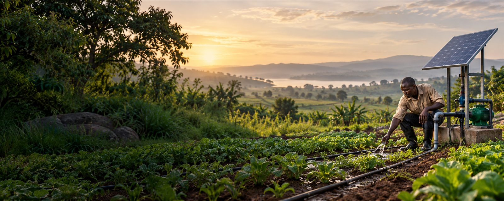

Access and movement
Water systems planned around how communities, farms and sites actually use them.

Water | Irrigation | Infrastructure
Yistam Enterprises supports the work behind reliable water access and productive land, from irrigation systems to practical infrastructure delivery.
Explore our workA practical approach
From moving water to supporting local production, Yistam's work sits where planning meets practical delivery. The aim is simple: understand the site, build for use, and leave people with a system they can rely on.
Water systems planned around how communities, farms and sites actually use them.
Irrigation solutions that help make water useful across growing seasons.
Project coordination grounded in the conditions, people and purpose on the ground.
A record of work
Public procurement records connect Yistam with irrigation system supply and installation, including a micro-scale irrigation award in Wakiso. This concept brings that work into a clear, approachable company website.
About YistamHave a project in mind?
Tell us what you are trying to build, improve or irrigate.